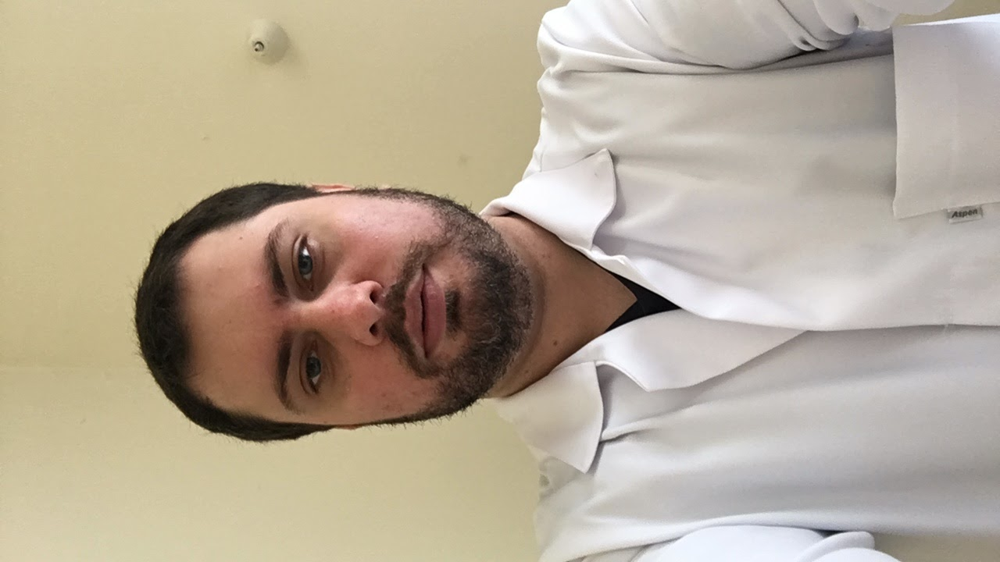

Objetivo
Desenvolvedor FullStack
Curso
Curso de informática para Internet - inicado em março de 2025 - Cursando atualmente.
Atividades desenvolvidas
HTML5 - CSS3 - JavaScript - PHP - Banco de Dados MySQL.
Descrição:
- - Elaborar projetos de aplicações para web.
- - Desenvolver serviços web, algoritmos e aplicações para websites.
- - Codificar front-end e back-end de aplicações web.
- - Estruturar e implementar diagramas de banco de dados.
- - Organizar o processo de trabalho no desenvolvimento de aplicações.
- - Criar interface gráfica para dispositivos móveis.
- - Codificar aplicações para dispositivos mobiles.
- - Codificar acesso à web services e recursos de sistemas móveis.
- - Publicar e testar aplicações web e para dispositivos móveis
- - Realizar manutenção de aplicações web.
- - Documentar etapas de desenvolvimento de software.
- - Aplicar comandos da linguagem SQL.
Escolariadade
Ensino Médio Completo - Conclusão em 2006
Experiência Anterior
Analista de midias sociais jr. Abr/2025 - Atual
Atuo como ponte entre a marca e os usuários, garantindo uma experiência positiva e resolutiva em um ambiente de streaming de conteúdo. Minhas responsabilidades incluem: Atendimento ao Cliente via Chat – Suporte especializado e humanizado para: Acesso e gerenciamento de contas (recuperação de credenciais, verificação de segurança); Solução de erros técnicos (conectividade, reprodução de conteúdo e compatibilidade de dispositivos); Transações e assinaturas (confirmação de pagamentos, ajustes de planos e reativações); Mediação de feedbacks e orientações sobre funcionalidades da plataforma. Gestão de Mídias Sociais com Foco no Usuário, além do suporte direto, atuo na moderação de interações, assegurando que o tom da marca seja alinhado e acolhedor, enquanto identifico oportunidades de melhoria com base no diálogo com a comunidade.
Sobre Mim
"Comunicativo por natureza e técnico por escolha, acredito que a melhor tecnologia é aquela que resolve problemas reais sem complicar a vida das pessoas. No suporte ao cliente, aprendi a escutar; no desenvolvimento, estou aprendendo a construir. Meu objetivo? Criar pontes entre códigos e pessoas." Analista de Mídias Sociais Jr. com experiência em atendimento ao cliente digital e suporte técnico em plataformas de streaming, combinando habilidades de comunicação empática e resolução ágil de problemas. Em transição para a área de Desenvolvimento Full-Stack, estou me especializando em: Front-end (HTML, CSS, JavaScript) e Back-end (lógica de programação, APIs); Bancos de dados (SQL, modelagem) e UI/UX para aplicações web e mobile; Metodologias ágeis e publicação de projetos. Diferencial: Visão 360° do usuário, unindo experiência em CX com conhecimento técnico para criar soluções digitais intuitivas e eficientes. Apaixonado por tecnologia, foco em entregar resultados que equilibrem funcionalidade e experiência humana.